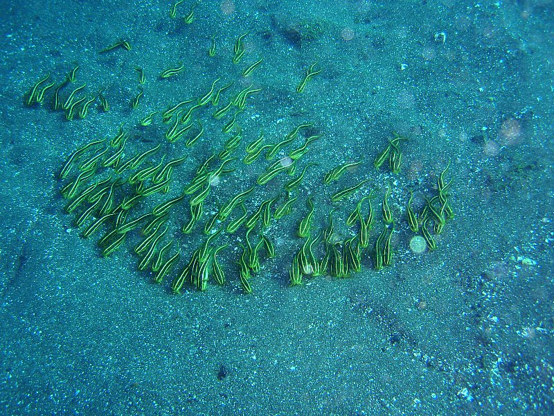

作成日: 2011-01-24 11:27:28 / last updated at: 2011-01-24 11:54:47
カテゴリ: ダイビング
カテゴリ: ダイビング
1/22-23と伊豆・大瀬崎にダイビングしてきました。
前回は7月のちょうど海の日連休だったので人ごみが凄かったですが、今回は真冬ということで空いていました。透明度も良好で、ゆっくりとダイビングを楽しめました。
ビーチの生き物（夏だと海水浴に使われているエリア）
今回のベストショット、ウデフリツノザヤウミウシ（通称ピカチュウ）：
ゴンズイ："ゴンズイ玉"状態は撮影失敗。

コケギンポ：

真冬にも関わらず、意外と魚の群れが豊富でした。スズメダイやマアジ、メバルの群れなどがダイバーにも物怖じせず寄ってきてくれます。
こちらに向かって、カメラの目の前で避けていくスズメダイ：
大瀬崎は、真冬が一番透明度が良い季節だそうです。外気温よりも水温のほうが暖かいです。
先端
湾内と湾外の境目、ビーチの囲いの切れ目です。急な斜面が続いていますが、大量の魚群を見ることが出来ました。ワイドの撮り方が甘く、お見せ出来る画像がこの一枚しか無いのが残念です(^_^;)。
original url: https://www.glamenv-septzen.net/view/904